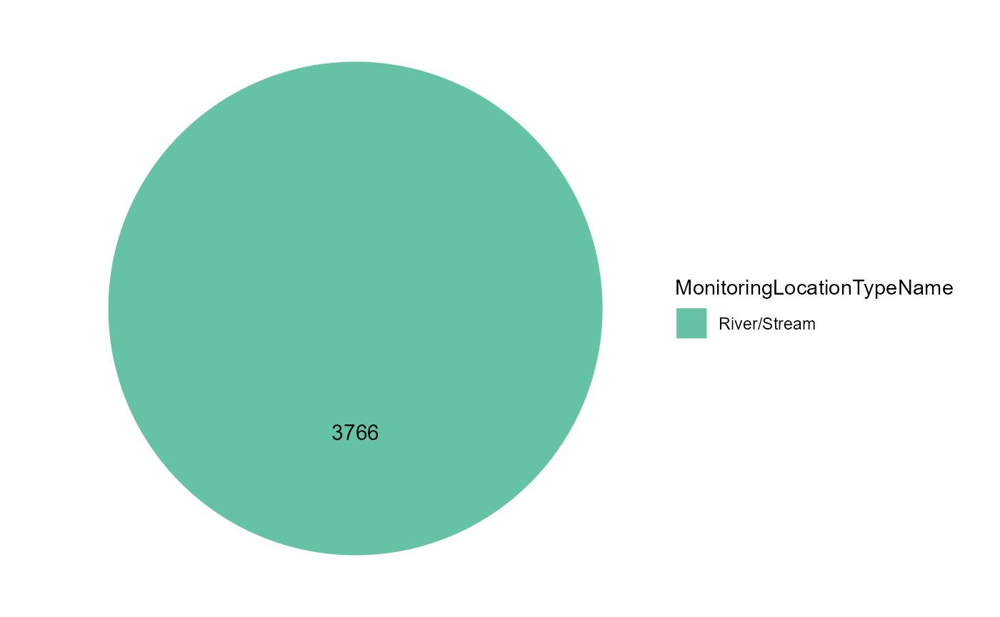
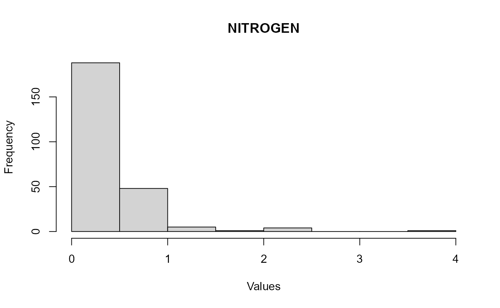

WQP Data Harmonization
TADA Team
2023-03-11
Source:vignettes/WQPDataHarmonization.Rmd
WQPDataHarmonization.RmdOverview
This vignette will walk through how to discover, wrangle, and harmonize Water Quality Portal (WQP) data from multiple organizations.
Install and load packages
To install TADA, currently you need to install from GitHub using remotes (shown) or devtools. dataRetrieval will be downloaded from CRAN, but the development version can be downloaded directly from GitHub (un-comment).
The following code will also install any packages you do not have, and load all packages required to run this vignette into your R session.
list.of.packages <- c("plyr", "data.table", "dplyr", "magrittr", "stringr", "maps","utils", "RColorBrewer", "stats", "lubridate", "remotes", "dataRetrieval", "ggplot2")
new.packages <- list.of.packages[!(list.of.packages %in% installed.packages()[,"Package"])]
if(length(new.packages)) install.packages(new.packages, repos = "https://cloud.r-project.org/")If you have any issues loading the remotes library using the code above, uncomment the line below to install the “remotes” package specifying the repo. You must load the remotes library before installing TADA and other packages from GitHub
Uncomment the lines below to install latest version of dataRetrieval and ggplot2 from GitHub.
# remotes::install_github("USGS-R/dataRetrieval", dependencies=TRUE)
# remotes::install_github("hadley/ggplot2", dependencies=TRUE)
remotes::install_github("USEPA/TADA", ref = "develop", dependencies = TRUE)
# if you experience any issues installing TADA, try uncommenting and running the line below before the install
# options(download.file.method = "wininet")Load the required libraries to run this vignette into your R session
Retrieve WQP data
WQP data is retrieved and processed for compatibility with TADA. This function, TADAdataRetrieval, builds on the USGS dataRetrieval package functions. It joins three WQP profiles (i.e., the station, narrow, and phys/chem), changes all data in the Characteristic, Speciation, Fraction, and Unit fields to uppercase, removes true duplicates, removes data for all non-water media types, and cleans up results with special characters.
This function uses the same inputs as the dataRetrieval
readWQPdata function. readWQPdata does not
restrict the characteristics pulled from Water Quality Portal (WQP).
You may specify the desired characteristics by using, for instance:
characteristicName = “pH”.
Data retrieval filters include:
statecode (review list of possible state and territory abbreviations)
endDate
startDate
countycode
siteid
siteType
characteristicName
sampleMedia
project
organization
Please be aware that this TADAdataRetrieval function automatically runs the TADA autoclean and ConvertSpecialChars functions as well, which are both required for subsequent functions within the TADA R package to run. As a general rule, TADA functions do not change any contents in the WQP-served columns (enter ?ConvertSpecialChars and ?autoclean into the console for more details). Instead, they add new columns with the prefix “TADA.” The following columns are numeric versions of their WQP origins:
- TADA.ResultMeasureValue
- TADA.DetectionQuantitationLimitMeasure.MeasureValue
- TADA.LatitudeMeasure
- TADA.LongitudeMeasureThese functions also add the columns TADA.ResultMeasureValueDataTypes.Flag and TADA.DetectionQuantitationLimitMeasure.MeasureValueDataTypes.Flag, which provide information about the result values that is needed to address censored data later on (i.e., nondetections). Specifically, these new columns flag if special characters are included in result values, and specifies what the special characters are.
Downloads using TADAdataRetrieval will have the same columns each time, but be aware that data are uploaded to the Water Quality Portal by individual organizations, which may or may not follow the same conventions. Data and metadata quality are not guaranteed! Make sure to carefully explore any data and make conservative quality assurance decisions where information is limited.
Tips:
-
All the query filters for the WQP work as an AND but within the fields there are ORs. For example:
Characteristics: If you choose pH & DO - it’s an OR. This means you will retrieve both pH OR DO data if available.
States: Similarly, if you choose VA and IL, it’s an OR. This means you will retrieve both VA OR IL data if available.
Combinations of fields are ANDs, such as State/VA AND Characteristic/DO”. This means you will receive all DO data available in VA.
“Characteristic” and “Characteristic Type” also work as an AND. This means that the Characteristic must fall within the CharacteristicGroup if both filters are being used, if not you will get an error.
The “siteid” is a general term WQP uses to describe both Site IDs from USGS databases and Monitoring Location Identifiers (from the Water Quality Portal). Each monitoring location in the Water Quality Portal (WQP) has a unique Monitoring Location Identifier, regardless of the database from which it derives. The Monitoring Location Identifier from the WQP is the concatenated Organization Identifier plus the Site ID number. Site IDs that only include a number are only unique identifiers for monitoring locations within USGS NWIS or EPA’s WQX databases separately.
Additional resources:
Review function documentation by entering the following code into the console: ?TADAdataRetrieval
dataRetrieval
Uncomment below if you would like to review differences between the profiles you would get using readWQPdata vs. TADAdataRetrieval. The profiles are different because TADAdataRetrieval automatically joins in data from multiple WQP profiles, and does some additional data cleaning as part of the data retrieval process.
# dataRetrieval1 <- dataRetrieval::readWQPdata(statecode = "AK", characteristicName = c("Fecal Coliform", "Escherichia coli", "Enterococcus"), startDate = "2018-05-01", ignore_attributes = TRUE)
# another example
# dataRetrieval2 <- dataRetrieval::readWQPdata(statecode = "UT", characteristicName = c("Ammonia", "Nitrate", "Nitrogen"), startDate = "2021-01-01", ignore_attributes = TRUE)Use the code below to download data from the WQP using TADAdataRetrieval. Edit the code chuck below to define your own WQP query inputs.
# here is an example for Utah
# TADAProfile1 <- TADAdataRetrieval(statecode = "UT", characteristicName = c("Ammonia", "Nitrate", "Nitrogen"), startDate = "2020-10-01")
# example for NM
# TADAProfile <- TADAdataRetrieval(statecode = "NM", characteristicName = c("Ammonia", "Nitrate", "Nitrogen"), startDate = "2020-05-01")
# example for Alaska
# TADAProfile2 <- TADAdataRetrieval(ProjectIdentifier = "Anchorage Bacteria 20-21")
# another example query for Alaska. We will move forward with this example in the remainder of the vignette
TADAProfile <- TADAdataRetrieval(statecode = "AK", characteristicName = c("Fecal Coliform", "Escherichia coli", "Enterococcus", "Ammonia", "Nitrate", "Nitrogen"), startDate = "2018-05-01")
#> [1] "NOTE: This version of the TADA package is designed to work with data with sample media: 'WATER'. autoclean does not currently filter downloaded data to 'WATER'. The user must make this specification on their own outside of package functions. See the WQPDataHamornization vignette for an example."Option 2: Alternatively, you can use the data.table::fread function to read in a web service call for any WQP profile (un-comment).
# New_Draft_fullphyschem <- data.table::fread("https://www.waterqualitydata.us/data/Result/search?countrycode=US&statecode=US%3A49&siteid=UTAHDWQ_WQX-4925610&startDateLo=01-01-2015&startDateHi=12-31-2016&mimeType=csv&zip=no&sorted=yes&dataProfile=fullPhysChem&providers=NWIS&providers=STEWARDS&providers=STORET")Extra tip: Note that the web service call built using the Water Quality Portal uses the inputs startDateLo and startDateHi rather than startDate and endDate, and dates are in the format MM-DD-YYYY rather than the TADAdataRetrieval and dataRetrieval format of YYYY-MM-DD. The functions use the latter format rather than the web service call date format because YYYY-MM-DD is a more easily utilized format in the R coding environment. However, users of USGS’s dataRetrieval may use the date format MM-DD-YYYY only if they specify with “startDateLo” and “startDateHi” inputs. For coding consistency, it is recommended users stick with YYYY-MM-DD.
Option 3: If you need to download a large amount of data from across a large area, and the TADAdataRetrieval function is not working due to WQP timeout issues, then the TADABigdataRetrieval function may work better.
This function does multiple synchronous data calls to the WQP (waterqualitydata.us). It uses the WQP summary service to limit the amount downloaded to only relevant data, and pulls back data from 100 stations at a time and then joins the data back together and produces a single TADA compatible dataframe as the output. For large dataframes, that can save a lot of time and ultimately reduce the complexity of subsequent data processing. Using this function, you will be able to download all data available from all sites in the contiguous United States that is available for the time period, characteristicName, statecode, and siteType requested.
See ?TADABigdataRetrieval for more details. WARNING, this can take multiple HOURS to run. The total run time depends on your query inputs.
# WARNING, this can take multiple HOURS to run
# StreamTemp <- TADABigdataRetrieval(startDate = "2000-01-01",
# endDate = "2022-12-31",
# characteristicName = "Temperature, water",
# statecode = c("AK","AL"))
#
# WaterTemp <- TADABigdataRetrieval(characteristicName = "Temperature, water")
#
# Phosphorus <- TADABigdataRetrieval(characteristicName = "Phosphorus")
#
# CT <- TADABigdataRetrieval(statecode = "CT")Review all column names in the TADA Profile. Remove results that are not water samples or measurements (TADA is recommended for use with water data only).
colnames(TADAProfile)
#> [1] "OrganizationIdentifier"
#> [2] "OrganizationFormalName"
#> [3] "ActivityIdentifier"
#> [4] "ActivityTypeCode"
#> [5] "ActivityMediaName"
#> [6] "ActivityMediaSubdivisionName"
#> [7] "ActivityStartDate"
#> [8] "ActivityStartTime.Time"
#> [9] "ActivityStartTime.TimeZoneCode"
#> [10] "ActivityEndDate"
#> [11] "ActivityEndTime.Time"
#> [12] "ActivityEndTime.TimeZoneCode"
#> [13] "ActivityRelativeDepthName"
#> [14] "ActivityDepthHeightMeasure.MeasureValue"
#> [15] "ActivityDepthHeightMeasure.MeasureUnitCode"
#> [16] "ActivityDepthAltitudeReferencePointText"
#> [17] "ActivityTopDepthHeightMeasure.MeasureValue"
#> [18] "ActivityTopDepthHeightMeasure.MeasureUnitCode"
#> [19] "ActivityBottomDepthHeightMeasure.MeasureValue"
#> [20] "ActivityBottomDepthHeightMeasure.MeasureUnitCode"
#> [21] "ProjectIdentifier"
#> [22] "ProjectName"
#> [23] "ActivityConductingOrganizationText"
#> [24] "MonitoringLocationIdentifier"
#> [25] "MonitoringLocationName"
#> [26] "ActivityCommentText"
#> [27] "SampleAquifer"
#> [28] "HydrologicCondition"
#> [29] "HydrologicEvent"
#> [30] "ActivityLocation.LatitudeMeasure"
#> [31] "ActivityLocation.LongitudeMeasure"
#> [32] "SampleCollectionMethod.MethodIdentifier"
#> [33] "SampleCollectionMethod.MethodIdentifierContext"
#> [34] "SampleCollectionMethod.MethodName"
#> [35] "SampleCollectionMethod.MethodDescriptionText"
#> [36] "SampleCollectionEquipmentName"
#> [37] "ResultIdentifier"
#> [38] "ResultDetectionConditionText"
#> [39] "MethodSpeciationName"
#> [40] "CharacteristicName"
#> [41] "ResultSampleFractionText"
#> [42] "ResultMeasureValue"
#> [43] "ResultMeasure.MeasureUnitCode"
#> [44] "MeasureQualifierCode"
#> [45] "ResultStatusIdentifier"
#> [46] "StatisticalBaseCode"
#> [47] "ResultValueTypeName"
#> [48] "ResultWeightBasisText"
#> [49] "ResultTimeBasisText"
#> [50] "ResultTemperatureBasisText"
#> [51] "ResultParticleSizeBasisText"
#> [52] "DataQuality.PrecisionValue"
#> [53] "DataQuality.BiasValue"
#> [54] "DataQuality.ConfidenceIntervalValue"
#> [55] "DataQuality.UpperConfidenceLimitValue"
#> [56] "DataQuality.LowerConfidenceLimitValue"
#> [57] "ResultCommentText"
#> [58] "USGSPCode"
#> [59] "ResultDepthHeightMeasure.MeasureValue"
#> [60] "ResultDepthHeightMeasure.MeasureUnitCode"
#> [61] "ResultDepthAltitudeReferencePointText"
#> [62] "SubjectTaxonomicName"
#> [63] "SampleTissueAnatomyName"
#> [64] "BinaryObjectFileName"
#> [65] "BinaryObjectFileTypeCode"
#> [66] "ResultFileUrl"
#> [67] "ResultAnalyticalMethod.MethodIdentifier"
#> [68] "ResultAnalyticalMethod.MethodIdentifierContext"
#> [69] "ResultAnalyticalMethod.MethodName"
#> [70] "ResultAnalyticalMethod.MethodUrl"
#> [71] "ResultAnalyticalMethod.MethodDescriptionText"
#> [72] "LaboratoryName"
#> [73] "AnalysisStartDate"
#> [74] "ResultLaboratoryCommentText"
#> [75] "ResultDetectionQuantitationLimitUrl"
#> [76] "DetectionQuantitationLimitTypeName"
#> [77] "DetectionQuantitationLimitMeasure.MeasureValue"
#> [78] "DetectionQuantitationLimitMeasure.MeasureUnitCode"
#> [79] "LabSamplePreparationUrl"
#> [80] "LastUpdated"
#> [81] "ProviderName"
#> [82] "timeZoneStart"
#> [83] "timeZoneEnd"
#> [84] "ActivityStartDateTime"
#> [85] "ActivityEndDateTime"
#> [86] "MonitoringLocationTypeName"
#> [87] "MonitoringLocationDescriptionText"
#> [88] "HUCEightDigitCode"
#> [89] "DrainageAreaMeasure.MeasureValue"
#> [90] "DrainageAreaMeasure.MeasureUnitCode"
#> [91] "ContributingDrainageAreaMeasure.MeasureValue"
#> [92] "ContributingDrainageAreaMeasure.MeasureUnitCode"
#> [93] "LatitudeMeasure"
#> [94] "LongitudeMeasure"
#> [95] "SourceMapScaleNumeric"
#> [96] "HorizontalAccuracyMeasure.MeasureValue"
#> [97] "HorizontalAccuracyMeasure.MeasureUnitCode"
#> [98] "HorizontalCollectionMethodName"
#> [99] "HorizontalCoordinateReferenceSystemDatumName"
#> [100] "VerticalMeasure.MeasureValue"
#> [101] "VerticalMeasure.MeasureUnitCode"
#> [102] "VerticalAccuracyMeasure.MeasureValue"
#> [103] "VerticalAccuracyMeasure.MeasureUnitCode"
#> [104] "VerticalCollectionMethodName"
#> [105] "VerticalCoordinateReferenceSystemDatumName"
#> [106] "CountryCode"
#> [107] "StateCode"
#> [108] "CountyCode"
#> [109] "AquiferName"
#> [110] "LocalAqfrName"
#> [111] "FormationTypeText"
#> [112] "AquiferTypeName"
#> [113] "ConstructionDateText"
#> [114] "WellDepthMeasure.MeasureValue"
#> [115] "WellDepthMeasure.MeasureUnitCode"
#> [116] "WellHoleDepthMeasure.MeasureValue"
#> [117] "WellHoleDepthMeasure.MeasureUnitCode"
#> [118] "MethodSpecificationName"
#> [119] "ProjectDescriptionText"
#> [120] "SamplingDesignTypeCode"
#> [121] "QAPPApprovedIndicator"
#> [122] "QAPPApprovalAgencyName"
#> [123] "ProjectFileUrl"
#> [124] "ProjectMonitoringLocationWeightingUrl"
#> [125] "TADA.LatitudeMeasure"
#> [126] "TADA.LongitudeMeasure"
#> [127] "TADA.ActivityMediaName"
#> [128] "TADA.CharacteristicName"
#> [129] "TADA.ResultMeasureValue"
#> [130] "TADA.ResultMeasureValueDataTypes.Flag"
#> [131] "TADA.ResultMeasure.MeasureUnitCode"
#> [132] "TADA.MethodSpecificationName"
#> [133] "TADA.ResultSampleFractionText"
#> [134] "TADA.DetectionQuantitationLimitMeasure.MeasureValue"
#> [135] "TADA.DetectionQuantitationLimitMeasure.MeasureUnitCode"
#> [136] "TADA.DetectionQuantitationLimitMeasure.MeasureValueDataTypes.Flag"
TADAProfile_CharSummary <- SummarizeColumn(TADAProfile,"TADA.CharacteristicName")
TADAProfile_CharSummary
#> # A tibble: 6 × 3
#> TADA.CharacteristicName n_sites n_records
#> <chr> <int> <int>
#> 1 AMMONIA 38 46
#> 2 ENTEROCOCCUS 179 2761
#> 3 ESCHERICHIA COLI 34 286
#> 4 FECAL COLIFORM 234 3271
#> 5 NITRATE 48 516
#> 6 NITROGEN 54 291
# Remove data for non-water media types
TADAProfile <- dplyr::filter(TADAProfile, TADA.ActivityMediaName == "WATER")Invalid coordinates
Review station locations
#create a map of the world
maps::map()
# draw the sites included in your TADAProfile onto the map
points(TADAProfile$TADA.LongitudeMeasure, TADAProfile$TADA.LatitudeMeasure, col="red", pch=20)
The TADA InvalidCoordinates function identifies and flags potentially invalid coordinate data. While its functionality is showcased here, it is always important to review any invalid outputs before cleaning to reduce the risk of leaving out usable data/sites.
Allowable values for clean_outsideUSA are “no”, “remove”, or “change sign”. The default is “no” which flags latitude and longitude coordinates outside the USA. Assigning clean_ousideUSA = “remove” will remove rows of data with coordinates outside the USA. And assigning clean_outsideUSA = “change sign” will flip the sign of latitude or longitude coordinates flagged as outside the USA. The “change sign” option should only be used when it is known that coordinates were entered with the wrong sign in WQX; additionally, the data owner should fix these incorrect coordinates in the raw data through the WQX - for assistance email the WQX help desk: WQX@epa.gov
Allowable values for clean_imprecise are TRUE or FALSE. The default is FALSE which flags rows of data with invalid or imprecise coordinates without removing them. Assigning clean_imprecise = TRUE will remove rows of data with invalid or imprecise coordinates.
Allowable values for errorsonly are TRUE or FALSE. The default is FALSE which keeps all rows of data regardless of flag status. Assigning errorsonly = TRUE filters the dataframe to show only rows of data which are flagged.
When clean_outsideUSA = “no” and/or clean_imprecise = FALSE, a column will be appended titled “TADA.InvalidCoordinates.Flag” with the following flags (if relevant to dataframe):
If the latitude is less than zero, the row will be flagged with “LAT_OutsideUSA”. (Exception for American Samoa)
If the longitude is greater than zero AND less than 145, the row will be flagged as “LONG_OutsideUSA”. (Exceptions for Guam and the Northern Mariana Islands)
If the latitude or longitude contains the string, “999”, the row will be flagged as invalid.
Finally, precision can be measured by the number of decimal places in the latitude and longitude provided. If either does not have any numbers to the right of the decimal point, the row will be flagged as “Imprecise”.
InvalidCoordinateFlags <- InvalidCoordinates(TADAProfile, clean_outsideUSA = "no", clean_imprecise = FALSE, errorsonly = TRUE)
# review unique flags in InvalidCoordinateFlags
unique(InvalidCoordinateFlags$TADA.InvalidCoordinates.Flag)
#> [1] "Imprecise_lessthan3decimaldigits" "Imprecise_Longincludes999"
# review unique MonitoringLocationIdentifiers in your flag dataframe
unique(InvalidCoordinateFlags$MonitoringLocationIdentifier)
#> [1] "USGS-695924143420301" "AKDECWQ-AnchBact20-Che3"
#> [3] "AKDECWQ-WHADA-Che3"
Unique_InvalidCoordinateFlags <- InvalidCoordinateFlags %>%
dplyr::select('MonitoringLocationIdentifier','MonitoringLocationName', 'TADA.InvalidCoordinates.Flag',
'OrganizationIdentifier', 'TADA.LongitudeMeasure', 'TADA.LatitudeMeasure', 'MonitoringLocationTypeName',
'CountryCode', 'StateCode', 'CountyCode', 'HUCEightDigitCode', 'MonitoringLocationDescriptionText',
'ProjectName', 'ProjectIdentifier', 'OrganizationFormalName') %>%
dplyr::distinct()
# remove all data for sites with invalid or imprecise coordinates. Change function inputs to keep this data, but be aware it may impact your mapping.
TADAProfileClean1 <- InvalidCoordinates(TADAProfile, clean_outsideUSA = "no", clean_imprecise = FALSE, errorsonly = FALSE)Depth unit conversions
The ConvertDepthUnits function converts depth units to a consistent unit. Depth values and units are most commonly associated with lake data, and are populated in the ActivityDepthHeightMeasure, ActivityTopDepthHeightMeasure, ActivityBottomDepthHeightMeasure, and ResultDepthHeightMeasure Result Value/Unit columns.
This function first checks the dataframe for depth profile data. Where depth profile columns are populated, the function appends ‘Conversion Factor’ columns and populates those columns based on the original unit and the target unit, which is defined in the ‘unit’ argument. A ‘Depth Target Unit’ column is also appended, indicating the unit all selected depth data is converted to. When transform = FALSE, the output includes all ‘Conversion Factor’ columns and the ‘Depth Target Unit’ column. When transform = TRUE, the output includes converted depth data and the ‘Depth Target Unit’ column, which acts as a flag indicating which rows have been converted. Default is transform = TRUE.
The depth profile function can harmonize the depth units across all the following fields (or only a specific one): “ActivityDepthHeightMeasure”, “ActivityTopDepthHeightMeasure”, “ActivityBottomDepthHeightMeasure”, “ResultDepthHeightMeasure”). It creates new result value/unit columns with the prefix “TADA.” to all converted columns. The default is to check all four Depth Height columns.
Allowable values for ‘unit’ are either ‘m’ (meter), ‘ft’ (feet), or ‘in’ (inch). ‘unit’ accepts only one allowable value as an input. Default is unit = “m”.
See additional function documentation for additional function options by entering the following code in the console: ?ConvertDepthUnits
#converts all depth profile data to meters
TADAProfileClean2 <- ConvertDepthUnits(TADAProfileClean1, unit = "m", transform = TRUE)Result unit conversions
The ConvertResultUnits function converts all results to WQX target units. WQX target units are pulled from the MeasureUnit domain table:
See additional function documentation for additional function options by entering the following code in the console: ?ConvertResultUnits
#Converts all results to WQX target units
TADAProfileClean3 <- ConvertResultUnits(TADAProfileClean2, transform = TRUE)Statistically aggregated data
The AggregatedContinuousData function checks for and removes statistically aggregated high frequency (i.e., continuous) data, if present.
The Water Quality Portal (WQP) is not currently designed to store high-frequency sensor data (more than 1 value per day). However, sometimes data providers choose to aggregate their continuous data to a daily avg, max, or min value, and then submit that aggregated data to the WQP through WQX. Alternatively, some organizations aggregate their high frequency data (15 min or 1 hour data) to 2 or 4 hour interval averages, and they also submit that data to the WQP through WQX. This type of high frequency data may (or may not) be suitable for integration with discrete water quality data for assessments. Therefore, this function uses metadata submitted by data providers to flag rows with aggregated continuous data. This is done by flagging results where the ResultDetectionConditionText = “Reported in Raw Data (attached)”.
When clean = FALSE, a column titled “TADA.AggregatedContinuousData” is added to the dataframe to indicate if the row includes aggregated continuous data, “Y”, or not, “N”.
When clean = TRUE, rows with aggregated continuous data are removed from the dataframe and no column will be appended. The default is clean = TRUE.
An additional input called errorsonly will allow the user to filter data to show only rows of aggregated continuous data. Allowable values for errorsonly are TRUE or FALSE. The default is FALSE which keeps all rows of data regardless of flag status. Assigning errorsonly = TRUE filters the dataframe to show only rows of data which are flagged “Y”.
See function documentation for additional function options by entering the following code in the console: ?AggregatedContinuousData
TADAProfileClean4 <- AggregatedContinuousData(TADAProfileClean3, clean = FALSE)
#> [1] "No changes were made, because we did not find any aggregated continuous data in your dataframe"
# uncomment below to create a dataframe of only the aggregated continuous data
# TADAProfile_aggcont <- AggregatedContinuousData(TADAProfileClean3, clean = FALSE, errorsonly = TRUE)WQX QAQC Service Result Flags
Run the following result functions to address invalid method, fraction, speciation, and unit metadata by characteristic. The default is clean = TRUE, which will remove invalid results. You can change this to clean = FALSE to flag results, but not remove them.
See documentation for more details:
-
?InvalidMethod
When clean = FALSE, this function adds the following column to your dataframe: TADA.AnalyticalMethod.Flag. This column flags invalid TADA.CharacteristicName, ResultAnalyticalMethod/MethodIdentifier, and ResultAnalyticalMethod/MethodIdentifierContext combinations in your dataframe either “Nonstandardized”, “Invalid”, or “Valid”.
When clean = TRUE, “Invalid” rows are removed from the dataframe and no column will be appended.
When errorsonly = TRUE, the dataframe is filtered to only the rows flagged as “Invalid”; default is errorsonly = FALSE.
-
?InvalidSpeciation
When clean = “none”, this function adds the following column to your dataframe: TADA.MethodSpeciation.Flag. This column flags each TADA.CharacteristicName and MethodSpecificationName combination in your dataframe as either “Nonstandardized”, “Invalid”, or “Valid”.
When clean = “invalid_only”, only “Invalid” rows are removed from the dataframe. Default is clean = “invalid_only”.
When clean = “nonstandardized_only”, only “Nonstandardized” rows are removed from the dataframe.
When clean = “both”, “Invalid” and “Nonstandardized” rows are removed from the dataframe.
When clean = “none”, no rows are removed from the dataframe.
When errorsonly = TRUE, the dataframe is filtered to only the rows flagged as “Invalid” or “Nonstandardized”; default is errorsonly = FALSE.
-
?InvalidResultUnit
When clean = FALSE, the following column will be added to your dataframe: TADA.ResultUnit.Flag. This column flags each TADA.CharacteristicName, TADA.ActivityMediaName, and TADA.ResultMeasure.MeasureUnitCode combination in your dataframe as either “Nonstandardized”, “Invalid”, or “Valid”.
When clean = TRUE, “Invalid” rows are removed from the dataframe and no column will be appended.
When errorsonly = TRUE, the dataframe is filtered to only the rows flagged as “Invalid”; default is errorsonly = FALSE.
-
?InvalidFraction
- When clean = FALSE, this function adds the following column to your dataframe: TADA.SampleFraction.Flag. This column flags each TADA.CharacteristicName and TADA.ResultSampleFractionText combination in your dataframe as either “Nonstandardized”, “Invalid”, or “Valid”.
- When clean = TRUE, “Invalid” rows are removed from the dataframe and no column will be appended.
- When errorsonly = TRUE, the dataframe is filtered to only the rows flagged as “Invalid”; default is errorsonly = FALSE.
TADAProfileClean5 <- InvalidMethod(TADAProfileClean4, clean = FALSE)
TADAProfileClean6 <- InvalidFraction(TADAProfileClean5, clean = FALSE)
#> Warning in InvalidFraction(TADAProfileClean5, clean = FALSE): Metadata
#> transformations may be adversely affected by choosing to retain 'Invalid'
#> fraction. In order to ensure transformation functions will run properly, set
#> clean = TRUE.
TADAProfileClean7 <- InvalidSpeciation(TADAProfileClean6, clean = "none")
#> Warning in InvalidSpeciation(TADAProfileClean6, clean = "none"): Metadata
#> transformations may be adversely affected by choosing to retain 'Invalid'
#> speciation. In order to ensure transformation functions will run properly, set
#> clean = 'invalid_only' or 'both'.
TADAProfileClean8 <- InvalidResultUnit(TADAProfileClean7, clean = "none")
#> Warning in InvalidResultUnit(TADAProfileClean7, clean = "none"): Metadata
#> transformations may be adversely affected by choosing to retain 'Invalid'
#> result units. In order to ensure transformation functions will run properly,
#> set clean = 'invalid_only' or 'both'.WQX national upper and lower thresholds
Run the following code to flag or remove results that are above or below the national upper and lower bound for each characteristic and unit combination. See documentation for more details:
-
?AboveNationalWQXUpperThreshold
When clean = FALSE, the following column is added to your dataframe: TADA.ResultValueAboveUpperThreshold.Flag. This column flags rows with data that are above the upper WQX threshold.
When clean = TRUE, data that is above the upper WQX threshold is removed from the dataframe. The default is clean = TRUE.
When errorsonly = TRUE, the dataframe is filtered to only the rows flagged as above the upper WQX threshold; default is errorsonly = FALSE.
-
?BelowNationalWQXLowerThreshold
When clean = FALSE, the following column is added to your dataframe: TADA.ResultValueBelowLowerThreshold.Flag. This column flags rows with data that are below the lower WQX threshold.
When clean = TRUE, data that is below the lower WQX threshold is removed from the dataframe. The default is clean = TRUE.
When errorsonly = TRUE, the dataframe is filtered to only the rows flagged as below the lower WQX threshold; default is errorsonly = FALSE.
TADAProfileClean9 <- AboveNationalWQXUpperThreshold(TADAProfileClean8, clean = FALSE)
TADAProfileClean10 <- BelowNationalWQXLowerThreshold(TADAProfileClean9, clean = FALSE)Potential duplicates
Sometimes multiple organizations submit the exact same data to Water Quality Portal (WQP), which can affect water quality analyses and assessments. This function checks for and identifies data that is identical in all fields excluding organization-specific and comment text fields. Each pair or group of potential duplicate rows is flagged with a unique ID. For more information, review the documentation by entering the following into the console:
-
?PotentialDuplicateRowID
When clean = FALSE, the following column will be added to you dataframe: TADA.PotentialDupRowIDs.Flag. This column flags potential duplicate rows of data in your dataframe, and assigns each potential duplicate combination a unique number linking the two potential duplication rows.
When clean = TRUE, the function retains the first occurrence of each potential duplicate in the dataframe and removes potential duplicate rows. No column is appended. The default is clean = TRUE.
When errorsonly = TRUE, the dataframe is filtered to only the rows flagged as potential duplicates; default is errorsonly = FALSE.
TADAProfileClean11 <- PotentialDuplicateRowID(TADAProfileClean10)
#> [1] "No changes were made, because we did not find any potential duplicates in your dataframe"Review QAPP information
The QAPPapproved function checks data for an approved QAPP.
This function checks to see if there is any information in the column “QAPPApprovedIndicator”. Some organizations submit data for this field to indicate if the data produced has an approved Quality Assurance Project Plan (QAPP) or not. In this field, Y indicates yes, N indicates no.
This function has three default inputs: clean = TRUE, cleanNA = FALSE, and errorsonly = FALSE. These defaults remove rows of data where the QAPPApprovedIndicator equals “N”.
Users could alternatively remove both N’s and NA’s using the inputs clean = TRUE, cleanNA = TRUE, and errorsonly = FALSE.
Additionally, users could filter to show only N’s and NA’s by using the inputs clean = FALSE, cleanNA = FALSE, and errorsonly = TRUE.
If clean = FALSE, cleanNA = FALSE, and errorsonly = FALSE, the function will not do anything.
TADAProfileClean12 <- QAPPapproved(TADAProfileClean11, clean = FALSE, cleanNA = FALSE)
#> [1] "Data is flagged but not removed because clean and cleanNA were FALSE"The QAPPDocAvailable function checks to see if a QAPP Doc is Available
This function checks data submitted under the “ProjectFileUrl” column to determine if a QAPP document is available to review. When clean = FALSE, a column will be appended to flag results that do have an associated QAPP document URL provided. When clean = TRUE, rows that do not have an associated QAPP document are removed from the dataframe and no column will be appended. When errorsonly = TRUE, the dataframe is filtered to show only rows that do not have an associated QAPP document. The defaults are clean = FALSE and errorsonly = FALSE. This function should only be used to remove data if an accompanying QAPP document is required to use data in assessments.
TADAProfileClean13 <- QAPPDocAvailable(TADAProfileClean12, clean = FALSE)Filter data by field
In this section a TADA user will want to review the unique values in specific fields and may choose to remove data with particular values.
To start, review the list of fields and the number of unique values in each field using the FilterFields function.
FilterFields(TADAProfileClean13)
#> FieldName Count
#> 1 OrganizationFormalName 7
#> 2 ActivityTypeCode 8
#> 3 ActivityMediaSubdivisionName 2
#> 4 ProjectName 33
#> 5 ActivityCommentText 55
#> 6 HydrologicCondition 7
#> 7 HydrologicEvent 7
#> 8 MeasureQualifierCode 20
#> 9 SampleTissueAnatomyName 1
#> 10 LaboratoryName 29
#> 11 DetectionQuantitationLimitTypeName 10
#> 12 MonitoringLocationTypeName 8
#> 13 TADA.ActivityMediaName 1
#> 14 TADA.CharacteristicName 6Next, choose a field from the list to see the unique values in that field, as well as the number of times each value appears in the dataframe using the FilterFieldReview function. We’ll start with ActivityTypeCode.
Here is a list of other fields to review:
ResultCommentText often has details relating to additional QA.
MeasureQualifierCode Contains information about data flags
Other codes may designate suspect data or other flags which may be described in detail in **ResultLaboratoryCommentText** or another column
FilterFieldReview("ActivityTypeCode", TADAProfileClean13)
#> FieldValue Count
#> 8 Sample-Routine 6678
#> 7 Quality Control Sample-Field Replicate 339
#> 4 Quality Control Sample-Blind Duplicate 70
#> 3 Quality Control Field Replicate Msr/Obs 54
#> 1 Field Msr/Obs 22
#> 2 Not determined 2
#> 5 Quality Control Sample-Equipment Blank 2
#> 6 Quality Control Sample-Field Blank 2The ActivityTypeCode field has four unique values – “Sample-Routine”, “Quality Control Sample-Field Replicate”, “Field Msr/Obs”, and “Quality Control Sample-Field Blank.” In this example we want to remove quality control values in the ActivityTypeCode field, therefore, we’ll specify that we want to remove the “Quality Control Sample-Field Replicate” and “Quality Control Sample-Field Blank” values in the ActivityTypeCode field.
# This chunk of code removes rows where any value in the ActivityTypeCode filed includes the string "Quality")
# See WQX domain file to review all the ActivityTypeCode allowable values:
# https://cdx.epa.gov/wqx/download/DomainValues/ActivityType.CSV
# Access all WQX Domain Files
#https://www.epa.gov/waterdata/storage-and-retrieval-and-water-quality-exchange-domain-services-and-downloads
TADAProfileClean14 <- dplyr::filter(TADAProfileClean13, !(ActivityTypeCode %in% ActivityTypeCode[grepl("Quality",ActivityTypeCode)]))We’ve completed our review of the ActivityTypeCode field.
Let’s move on to a different field and see if there are any values that we want to remove – we’ll look at the values in the ResultStatusIdentifier field.
FilterFieldReview("ActivityMediaSubdivisionName", TADAProfileClean14)#> FieldValue Count
#> 1 Surface Water 4234The ActivityMediaSubdivisionName field has unique values. In this example, we show how a user could leverage this function to remove specific values from their dataframe.
Filter data by field, subset by parameter
In this section a TADA user will want to select a parameter, review the unique values associated with that parameter in specific fields, and choose to remove particular values.
To start, review the list of parameters in the dataframe using the FilterParList function. (The list is sorted from highest to lowest counts. Only the first few rows are displayed to save space on the page)
FilterParList(TADAProfileClean15)
#> FieldValue Count
#> 4 FECAL COLIFORM 3042
#> 2 ENTEROCOCCUS 2577
#> 5 NITRATE 502
#> 6 NITROGEN 277
#> 3 ESCHERICHIA COLI 263
#> 1 AMMONIA 41Next, select a parameter. Let’s explore the fields associated with Nitrogen using the FilterParFields function:
FilterParFields(TADAProfileClean15, "NITROGEN")
#> FieldName Count
#> 1 ResultAnalyticalMethod.MethodIdentifier 2
#> 2 ResultAnalyticalMethod.MethodIdentifierContext 3
#> 3 ActivityTypeCode 2
#> 4 ActivityMediaSubdivisionName 1
#> 5 ActivityCommentText 40
#> 6 HydrologicCondition 7
#> 7 HydrologicEvent 6
#> 8 SampleCollectionMethod.MethodIdentifier 14
#> 9 SampleCollectionMethod.MethodIdentifierContext 4
#> 10 SampleCollectionMethod.MethodName 11
#> 11 SampleCollectionEquipmentName 12
#> 12 MethodSpeciationName 2
#> 13 MeasureQualifierCode 4
#> 14 ResultStatusIdentifier 5
#> 15 ResultValueTypeName 2
#> 16 ResultWeightBasisText 2
#> 17 ResultTemperatureBasisText 1
#> 18 ResultParticleSizeBasisText 1
#> 19 DataQuality.BiasValue 1
#> 20 ResultCommentText 5
#> 21 ResultAnalyticalMethod.MethodName 2
#> 22 LaboratoryName 3
#> 23 ResultLaboratoryCommentText 12
#> 24 DetectionQuantitationLimitTypeName 3
#> 25 MonitoringLocationTypeName 2
#> 26 TADA.ActivityMediaName 1
#> 27 TADA.ResultMeasure.MeasureUnitCode 1
#> 28 TADA.ResultSampleFractionText 3Selecting a parameter generates the list below, which is subset by the selected parameter, of fields and the number of unique values in each field.
Then choose a field from the list. In this example we’ll remove certain values from the HydrologicEvent field.
FilterParFieldReview("HydrologicEvent", TADAProfileClean15, "NITROGEN")#> FieldValue Count
#> 3 Routine sample 174
#> 5 Under ice cover 9
#> 1 Flood 3
#> 2 Not applicable 1
#> 4 Snowmelt 1The HydrologicEvent field has five unique values. In this example we want to remove samples collected during “Flood” events. Therefore, we’ll specify that we want to remove rows where the CharacteristicName is “NITROGEN” and the HydrologicEvent field is “Flood.”
Transform Characteristic, Speciation, and Unit values to TADA Standards
The HarmonizeRefTable function generates a harmonization reference table that is specific to the input dataframe. Users can review how their input data relates to standard TADA values for the following elements:
TADA.CharacteristicName
TADA.ResultSampleFractionText
TADA.MethodSpecificationName
TADA.ResultMeasure.MeasureUnitCode
The HarmonizeData function then compares the input dataframe to the TADA Harmonization Reference Table. The purpose of the function is to make similar data consistent and therefore easier to compare and analyze.
Users can also edit the reference file to meet their needs if desired. The download argument can be used to save the harmonization file to your current working directory when download = TRUE, the default is download = FALSE.
Optional outputs include:
the dataframe with Harmonization columns appended,
the dataframe with TADA.CharacteristicName, TADA.ResultSampleFractionText, TADA.MethodSpecificationName, and TADA.ResultMeasure.MeasureUnitCode converted to TADA standards or
the four fields converted with most Harmonization Reference Table columns appended. Default is transform = TRUE and flag = TRUE.
Here are some examples of how the HarmonizeData function can be used:
TADA.ResultSampleFractionText specifies forms of constituents. In some cases, a single *TADA.CharacteristicName** will have both “Total” and “Dissolved” forms specified, which should not be combined. In these cases, each TADA.CharacteristicName and TADA.ResultSampleFractionText combination is given a different identifier. This identifier can be used later on to identify comparable data groups for calculating statistics and creating figures for each combination.
Some variables have different names but represent the same constituent (e.g., “Total Kjeldahl nitrogen (Organic N & NH3)” and “Kjeldahl nitrogen”). The HarmonizeData function gives a consistent name (and identifier) to synonyms.
UniqueHarmonizationRef <- HarmonizationRefTable(TADAProfileClean16, download = FALSE)
TADAProfileClean17 <- HarmonizeData(TADAProfileClean16, ref = UniqueHarmonizationRef, transform = TRUE, flag = TRUE)Censored data
Censored data are measurements for which the true value is not known, but we can estimate the value based on lower or upper detection conditions and limit types. TADA fills missing TADA.ResultMeasureValue and TADA.ResultMeasure.MeasureUnitCode values with values and units from TADA.DetectionQuantitationLimitMeasure.MeasureValue and TADA.DetectionQuantitationLimitMeasure.MeasureUnitCode, respectively, using the autoclean function. In other words, detection limit information is copied and pasted into the result value column when the original value is NA and detection limit information is available. The two columns TADA focuses on to define and flag censored data are ResultDetectionConditionText and DetectionQuantitationLimitTypeName.
The TADA package currently has functions that summarize censored data incidence in the dataset and perform simple substitutions of censored data values, including x times the detection limit and random selection of a value between 0 and the detection limit. The user may specify the methods used for non-detects and over-detects separately in the input to the simpleCensoredMethods function.
All censored data functions depend first on the idCensoredData utility function, which assigns a TADA.CensoredData.Flag to all data records and identifies over-detects from non-detects using the ResultDetectionConditionText and DetectionQuantitationLimitTypeName. This utility function is automatically run within the summary and simple methods functions if the dataset does not contain the TADA.CensoredData.Flag. All records receive one of the following classifications: - Uncensored - Not filled with detection limit value; a detection. - Non-Detect - Left-censored - Over-Detect - Right-censored - Other Condition/Limit Populated - detection condition or limit type are ambiguous or not associated with a lower/upper detection limit. - Conflict between Condition and Limit - detection condition and limit type for a single record do not agree, e.g. one suggests over-detect and the other suggests non-detect. - Censored but not Categorized - detection condition or limit type is not characterized in the TADA reference tables, which are based on WQX domain tables. Causes function to produce a warning.
In the example below, we first summarize the censored data in the dataset using the default grouping variables TADA.CharacteristicName, TADA.ResultMeasure.MeasureUnitCode,TADA.ResultSampleFractionText, and TADA.MethodSpecificationName. The user can specify any columns in the TADA dataframe they’d like to use to aggregate their censored data counts. For example, some may want to aggregate both by characteristic and HUC or characteristic and monitoring location.
The next step we take in this example is to perform simple conversions to the censored data in the dataset: we keep over-detects as is (no conversion made) and convert non-detect values to 0.5 times the detection limit (half the detection limit). Please review ?summarizeCensoredData and ?simpleCensoredMethods for more information.
TADAProfileClean18_censoredSummary = summarizeCensoredData(TADAProfileClean17, spec_cols = c("TADA.CharacteristicName","TADA.ResultMeasure.MeasureUnitCode","TADA.ResultSampleFractionText","TADA.MethodSpecificationName"))
#> Warning in summarizeCensoredData(TADAProfileClean17, spec_cols =
#> c("TADA.CharacteristicName", : Dataset contains data missing both a result
#> value and a detection limit. Suggest removing or handling before summarizing.
#> Warning in idCensoredData(.data): DetectionQuantitationLimitTypeName column
#> dataset contains value(s) Historical Lower Reporting Limit which is/are not
#> represented in the DetectionQuantitationLimitTypeName WQX domain table. These
#> data records are placed under the TADA.CensoredData.Flag: Censored but not
#> Categorized, and will not be used in censored data handling methods. Please
#> contact TADA administrators to resolve.
#> Warning in idCensoredData(.data): 7 records in supplied dataset have
#> conflicting detection condition and detection limit type information. These
#> records will not be included in detection limit handling calculations.
TADAProfileClean18_censoredSummary
#> TADA.CharacteristicName TADA.ResultMeasure.MeasureUnitCode
#> 1 AMMONIA
#> 2 AMMONIA UG/L
#> 3 ENTEROCOCCUS MPN/100ML
#> 4 ENTEROCOCCUS MPN/100ML
#> 5 ESCHERICHIA COLI MPN/100ML
#> 6 ESCHERICHIA COLI UG/L
#> 7 FECAL COLIFORM CFU/100ML
#> 8 FECAL COLIFORM UG/L
#> 9 NITROGEN MG/L
#> 10 NITROGEN MG/L
#> 11 TOTAL NITROGEN, MIXED FORMS MG/L
#> TADA.ResultSampleFractionText TADA.MethodSpecificationName Sample_Count
#> 1 UNFILTERED AS N 5
#> 2 TOTAL AS NH3 36
#> 3 TOTAL <NA> 21
#> 4 <NA> <NA> 2552
#> 5 <NA> <NA> 195
#> 6 <NA> <NA> 55
#> 7 <NA> <NA> 2934
#> 8 <NA> <NA> 55
#> 9 SUSPENDED <NA> 185
#> 10 UNFILTERED AS N 59
#> 11 TOTAL AS N 30
#> Censored_Count Percent_Censored Censoring_Levels TADA.CensoredData.Flag
#> 1 3 60.000000 1 Non-Detect
#> 2 27 75.000000 1 Non-Detect
#> 3 4 19.047619 2 Non-Detect
#> 4 1153 45.180251 3 Non-Detect
#> 5 14 7.179487 1 Non-Detect
#> 6 11 20.000000 1 Non-Detect
#> 7 576 19.631902 11 Non-Detect
#> 8 15 27.272727 1 Non-Detect
#> 9 51 27.567568 1 Non-Detect
#> 10 48 81.355932 1 Non-Detect
#> 11 11 36.666667 1 Non-Detect
#> TADA.Censored.Note
#> 1 Robust Regression Order Statistics
#> 2 Robust Regression Order Statistics
#> 3 Kaplan-Meier
#> 4 Kaplan-Meier
#> 5 Robust Regression Order Statistics
#> 6 Robust Regression Order Statistics
#> 7 Kaplan-Meier
#> 8 Robust Regression Order Statistics
#> 9 Robust Regression Order Statistics
#> 10 Percent censored too high for estimation methods
#> 11 Robust Regression Order Statistics
TADAProfileClean18 = simpleCensoredMethods(TADAProfileClean17, nd_method = "multiplier", nd_multiplier = 0.5, od_method = "as-is", od_multiplier = "null")
#> Warning in idCensoredData(.data): DetectionQuantitationLimitTypeName column
#> dataset contains value(s) Historical Lower Reporting Limit which is/are not
#> represented in the DetectionQuantitationLimitTypeName WQX domain table. These
#> data records are placed under the TADA.CensoredData.Flag: Censored but not
#> Categorized, and will not be used in censored data handling methods. Please
#> contact TADA administrators to resolve.
#> Warning in idCensoredData(.data): 7 records in supplied dataset have
#> conflicting detection condition and detection limit type information. These
#> records will not be included in detection limit handling calculations.Characteristic Specific Analyses Below
Address censored data for a single characteristic.
# how to point to a column in R: yourdataset$thecolumnyouwant
# e.g., temp$ResultMeasureValueNitrogenExample <- filter(TADAProfileClean17, CharacteristicName == "NITROGEN")
SingleCharacteristic <- dplyr::filter(TADAProfileClean17, TADA.CharacteristicName == "NITROGEN")
# review the types of censored data you have in your data frame
table(SingleCharacteristic$ResultDetectionConditionText)
#>
#> Not Detected
#> 99
# review number of results that are NA's
sum(is.na(SingleCharacteristic$TADA.ResultMeasureValue))
#> [1] 0
# substitute a value for NA. In this example, 0.02 MG/L is used for NITROGEN
SingleCharacteristic$TADA.ResultMeasureValue <- ifelse(is.na(SingleCharacteristic$TADA.ResultMeasureValue) == TRUE, 0.02, SingleCharacteristic$TADA.ResultMeasureValue)Summarize results for a single characteristic
# add na.rm = TRUE to the function above to strip NA values before the mean computation proceeds
summary(SingleCharacteristic$TADA.ResultMeasureValue, na.rm = TRUE)
#> Min. 1st Qu. Median Mean 3rd Qu. Max.
#> 0.0300 0.0370 0.1000 0.3580 0.4248 3.7400
hist(SingleCharacteristic$TADA.ResultMeasureValue, main = unique(SingleCharacteristic$TADA.CharacteristicName), xlab = "Values")